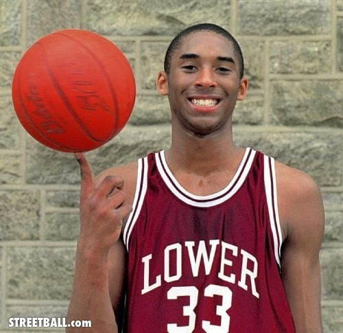

Born in 1978 in Philadelphia, Pennsylvania, Kobe Bryant spent his early years in Italy and joined the NBA straight out of high school. A dominant scorer, Bryant won five NBA championships and the 2008 MVP Award with the Los Angeles Lakers. Although later seasons were marred by injuries, he surpassed Michael Jordan for third place on the NBA all-time scoring list in December 2014, and retired in 2016 after scoring 60 points in his final game. In 2018 Bryant earned an Academy Award for Best Animated Short Film for Dear Basketball.
Beginning
In his second season with the Lakers, Bryant was voted a starter for the 1998 All-Star Game, becoming the youngest All-Star in NBA history at 19. The shooting guard then teamed up with superstar center Shaquille O'Neal to win three consecutive NBA championships and was voted first-team all-NBA from 2002-04. He also inked multi-year endorsement deals with Adidas, Sprite and other top sponsors. Although the Lakers struggled after O'Neal left in 2004, Bryant performed brilliantly. He scored 81 points against the Toronto Raptors in January 2006, the second-highest single-game mark in NBA history, and led the league in scoring that year and the next.
Middle
In 2008 Bryant was named Most Valuable Player and carried his team to the NBA Finals, where they lost to the Boston Celtics. In the 2009 NBA Finals, the Lakers beat the Orlando Magic to win the championship. Shortly afterward, Bryant was part of the memorial service to honor friend and music superstar Michael Jackson. The following year, the Lakers won their second straight title by defeating the Celtics. Bryant played on both the 2008 and 2012 U.S. Olympic teams, winning consecutive gold medals with teammates Kevin Durant, LeBron James and Carmelo Anthony, among several other top players.
End
After suffering a torn Achilles tendon in April 2013, Bryant worked hard to return to the court before fracturing his knee just six games into the 2013-14 season. The veteran All-Star surpassed Michael Jordan for third all-time on the NBA scoring list in December 2014, but his season ended due to injury for the third straight year when he sustained a torn rotator cuff in January 2015. In November 2015, he announced that he would retire at the end of the season.On April 13, 2016, Bryant dazzled a sold-out crowd at the Staples Center and fans everywhere in the last game of his career, scoring 60 points and leading the Lakers to a win against the Utah Jazz. It was Kobe's sixth 60-point game of his career.